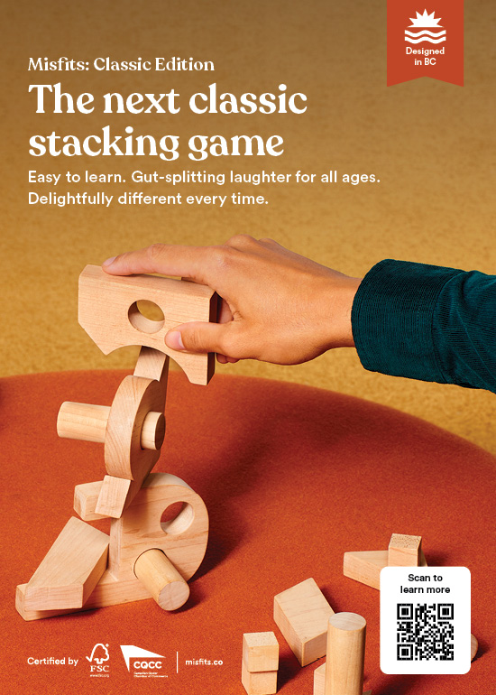
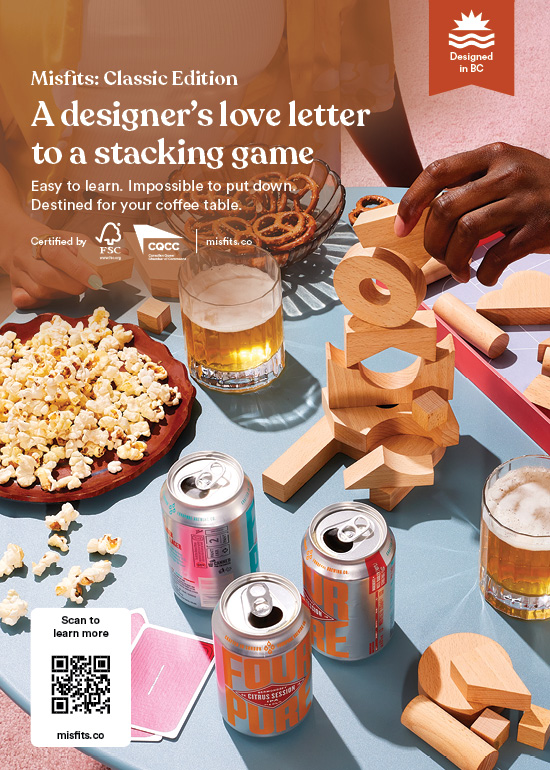
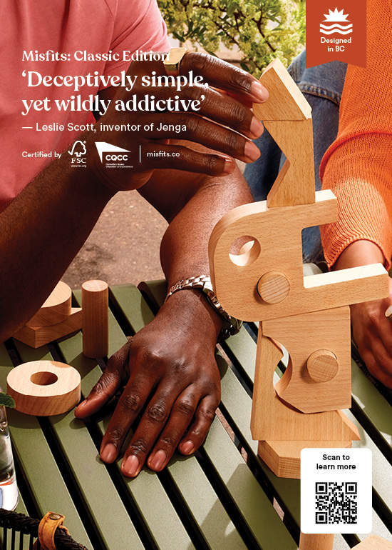

01
The Next Classic Stacking Game
- Letter 8.5 × 11 inWith ‘Designed in BC’ bannerPDFWith bleed
- 5x7 5 × 7 inWith ‘Designed in BC’ bannerPDFWith bleed
- A4 210 × 297 mmNo bannerPDFWith bleed
- A5 148 × 210 mmNo bannerPDFWith bleed
Printable counter cards for Misfits: Classic Edition. Pick a design and a size. We’d recommend the plain PDF for an office printer, or the bleed version for a print shop.

01

02

03
Print at 100% (Actual size), not Fit to page. Colors are CMYK, so we’d recommend a test print first. Read the README for details.